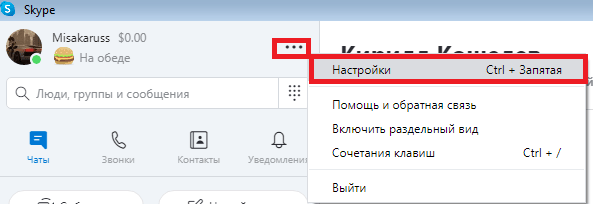
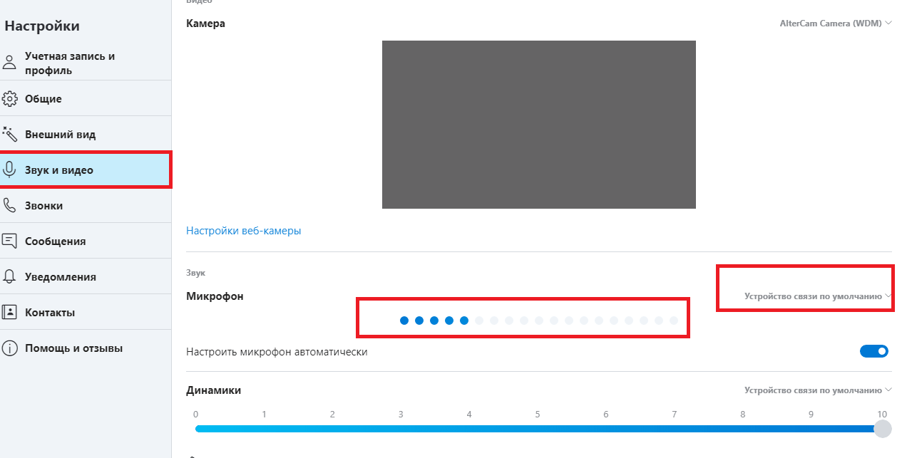
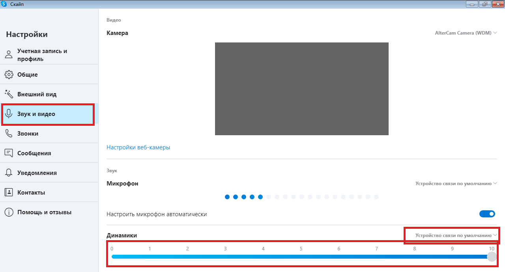

Не работает микрофон или наушники в Skype
Одна из самых частых проблем программы Skype – нерабочие динамики или микрофон. Причинами проблем могут стать как программные, так и технические неполадки. В этой статье мы простым языком объясним, как находить и решать программные неполадки и как диагностировать технические неполадки, после чего вам стоит обращаться к мастеру.
| Проблема с микрофоном в скайп ↓ | Проблема с наушниками в скайп ↓ |
Простая диагностика проблемы с микрофоном в Skype
Для начала, опробуйте сервис для проверки звука «Echo / Sound Test Service», который можно найти в списке контактов. Если его там нет, то просто откройте поисковик Skype и введите «Echo», первым же вариантом появится именно этот сервис.
{kind=link}
Чтобы проверить свой микрофон позвоните этому боту. Сначала он объяснит то, что после звукового сигнала вы должны начать говорить в микрофон. После повторного сигнала он воспроизведет записанный сигнал, если вы себя услышали, то проблем с вашим микрофоном нет.
Неверный микрофон в настройках Скайп
Если вы не услышали себя после повторного сигнала, то, возможно, ваш микрофон был неверно определился в настройках. Чтобы это проверить, выполните несколько простых действий:
- Справа от вашего аккаунта находится кнопка дополнительного меню, нажмите на нее;
- В открывшимся меню кликните по «Настройкам»;
- Среди пунктов слева найдите «Звук и видео»;
- Попробуйте издать какой-либо звук, и если кружки (см. скриншот) начнут окрашиваться синим цветом, можно понять, что микрофон работает;
- Если кружки не окрашиваются, вместо «Устройства связи по умолчанию» выберете ваш микрофон, а затем опять издайте звук и посмотрите на кружочки, далее пройдите тест Echo заново.
{kind=link}
{kind=link}
Неправильные драйвера
Если вы не увидели своего микрофона среди устройств связи, то это могут быть проблемы с драйверами.
Скачайте автоматический установщик драйверов или найдите драйвера своего микрофона на сайте производителя, введя полное название модели. Могут понадобиться и драйвера для материнской платы, в частности драйвера разъемов, их можно установить если установка драйверов микрофона не помогла.
Самостоятельно установите драйвера микрофона и выполните действия по настройке вновь.
Неправильные динамики/наушники в настройках
Возможно автоматическая настройка Skype неправильно выбрало ваше устройство вывода. Для проверки и решения этой проблемы, проделайте следующие действия:
- Справа у профиля найдите и нажмите на кнопку вызова дополнительного меню;
- В открывшимся дополнительном меню выберете «Настройки»;
{kind=link}
- В открывшимся окне найдите слева пункт «Звук и видео»;
- В нем снизу посмотрите выделенный ползунок громкости динамика, который должен стоять как минимум на 1. Если он вообще весь белый, то это и есть причина отсутствия звука – он просто отключен в настройках. Выставите ползунок на значении больше 1;
- Если все нормально, вместо «Устройства связи по умолчанию» выберите ваши наушники/динамики, а затем протестируйте звук в звонке.
Если вашего устройства там нет, то, возможно, виноваты неправильные драйвера. Скачайте с сайта производителя драйвера разъемов материнской платы (или южного моста) и ваших наушников, после чего установите их и проделайте те же самые действия с настройками.
Общая проблема – механические повреждения
Если вам не помогли все предыдущие варианты решения, то стоит готовиться к худшему – к возможным механическим повреждениям устройств.
Диагностика механических повреждений устройства проста – подключите их к заведомо исправному гаджету или ПК и протестируйте устройство на нем. Если все сработало – устройство исправно и проблема в компьютере, если нет – относите микрофон или динамики к компьютерному мастеру.
Диагностика разъемов компьютера так же проста, попробуйте подключить рабочие микрофон и динамики к разъему, а затем, если вы подключали устройства к корпусу, то подключите их к разъемам материнской платы или наоборот. После этого попробуйте протестировать рабочие устройства заново, если рабочий разъем заработал, а тот, к которому вы ранее подключались, нет, то следует отнести компьютер к мастеру.